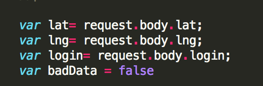
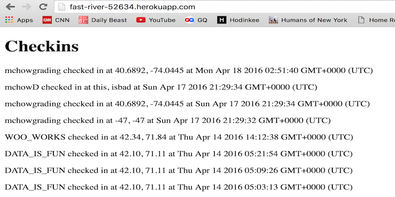
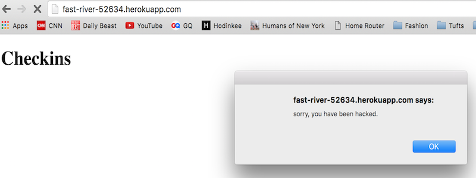
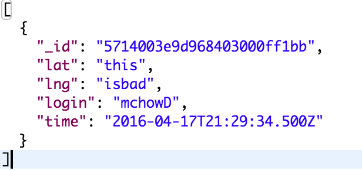
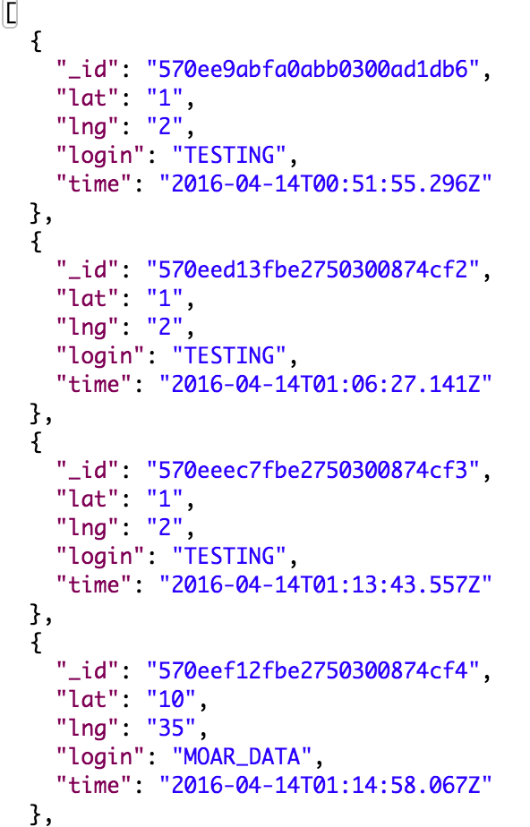
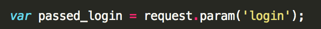
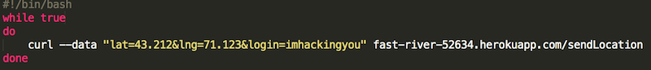
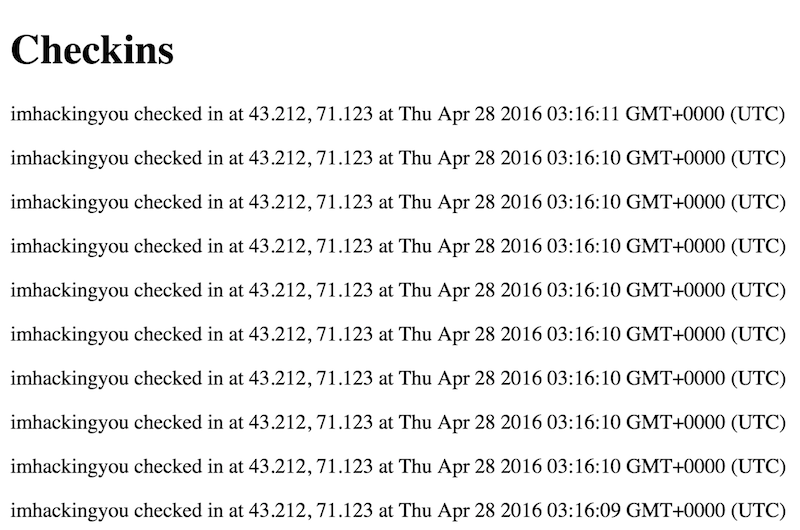

Security Assessment of Historic Landmarks API
Written by Ryan L. Osgood • 4/21/2016
Introduction
This assessment will test the security of Joshua Terry's Historic Landmarks web application for comp20 Assignment. Given the username, latitude and longitude of the cient, the API will store that client-data, and will return the location of other users of the application as well as all historic landmarks within a mile. The API also offers a web interface that displays all usernames and locations of clients and can return JSON data for a particular username, given correct input. However, there are many security vulnerabilities present in the API that make it unsuitable for public use. This document will identify such vulnerabilities and present possible solutions.
According to the Microsoft Security Response Center (MSRC), a security vulnerability can be considered any weakness that "offers a potential avenue of attack against a system". In that case, there are vulnerabilities inherent to the specifications of the API. For instance, anyone can submit a username and location to the database and have access to landmarks and, more importantly, the location of other clients; this is a major security and privacy vulnerability. However, this particular weakness was intended by Joshua as it was part of the assignment's specifications. MSRC continues by saying that in the context used in the software security industry and in their own organization, a security vulnerability that results from a product weakness that the developer did not intend to introduce. In that case, such vulnerabilities that are inherent to the specifications of the Historic Landmarks API cannot be considered security vulnerabilities and will not be considered in the scope of this assessment.
Methodology
I started by doing "black-box" testing. I used their assignment 2 to get their heroku adress and I then used Postman and curl to exploit vulnerabilities I suspected by sending POST and GET requests to their server. This is how I found the XSS weakness and wrote the bash script to overflow their server. I then looked at my partner's server code in what is called "white-box" testing. This is how I found the MondoDB exploit as I saw he was not sanitizing the query in the GET URL. I then thought about other possible issues and realized that the reason the bash exploit was possible was because of bad server design: anyone could send anything they wanted to his server.
Abstract of Findings
The main issues found in this product have to do with sanitizing user input, it seems like Ming Chow of Tufts University put it correctly: "never trust user input". Both the cross site scripting attack and the mongoDB attack were both due to user input being trusted and not being sanitized properly. A simple one line of code could have solved both of those very serious security issues, this shows that basic security can be very easily implemented. Finally, the last vulnerability which uses a bash script shows underlying problems with the code and the requirements from the client. For the code to be more secure, the server should have a list of pre-approved developers that can use the API and should limit the total amount of possible requests in a given amount of time. Overall, there are many issues with this code, but most of them can easily by fixed by sanitizing all user input from javascript, html, css, and other types of injections.
Issues Found
Cross-Site Scripting
- LOCATION: Accessed weakness using POST API, Affects Database and GET APIs
- SEVERITY:HIGH: this is the most obvious weakness and probably the easiest to detect, a typical case of why user input cannot be trusted. This vulnerability is a serious security issue for the Landmarks API as any website that might use this API might be compromised if malicious code was injected. However, it's very easy to fix the issue and it's possible to fix exposures retroactively.
- DESCRIPTION & PROOF OF VULNERABILITY: The API relies on clients submitting their latitude, longitude and username. Whenever user input is necessary, an XSS weakness is possible if the data submitted (in this case via the POST API) is not sanitized, as seen in Josh's code below where data is set to user input with no sanitization:
|  |
When the data is not sanitized HTML, CSS or, more importantly, JavaScript code can be injected into the API. This is the first thing I checked and a vulnerability was found as this code was successfully injected into the database and affected the client using the API:curl --data "lat=42.4088478&lng=-71.1226377&login=<script>while(true){alert("sorry, you have been hacked.")}</script>" http://fast-river-52634.herokuapp.com/sendLocation as seen below:
|  |
|  |
- RESOLUTION: The vulnerability can be fixed by sanitizing user input before it enters the database. For example, to make sure no JavaScript is injected, this code can replace all '<' and '>' with a greater than or lesser than symbol:var safe_str = unsafe_str.replace(/&/g, "&amp;").replace(/</g, "&lt;").replace(/>/g, "&gt;");. This same sanitizing can be applied retroactively using
db.collection.update()within the mongo shell. Of course this code will only replace the '<' and '>', there are other characters that should be replaced such as '{' and "}" for a more secure product.
MongoDB Request Injection
- LOCATION: Accessed weakness using GET API, Affects GET API
- SEVERITY:HIGH: this vulnerability will not impact all clients because you are not injecting nefarious code into the database.However, it's a major privacy issue where an attacker could easily view and possibly download all data within a MongoDB collection and therefore retrieve sensitive information like passwords, bank accounts,etc. Luckily, in the case of this API none of the information in the checkins database is very sensitive
- DESCRIPTION & PROOF OF VULNERABILITY: The API provides a GET request where a URL can be accessed with a specific login name as a query to retrieve data about that login. For instance, by doing:
curl http://fast-river-52634.herokuapp.com/checkins.json?login=mchowD
all checkin information available about user mchowD will be retrieved in a JSON format as seen below:

|
However, all other data in the collection can be accessed by specifiying all logins NOT EQUAL to the specified login. The following curl comand returns all objects in the collection that do not have an mchowD login:
curl http://fast-river-52634.herokuapp.com/checkins.json?login[$ne]=mchowD
|  |
This code clearly returns in the same JSON format all data whose username is not mchowD, thereby exposing all information in the collection, a major privacy issue. The problem here is that Terry is not sanitizing the query at all as seen in his code:
 |
- RESOLUTION: The vulnerability can also be fixed by sanitizing the URL query that the user inputs. This can be done by replacing all '[' and ']' and '$' with different characters that will make the injection impossible:var safe_query = unsafe_query.replace(/[/g, "bracket").replace(/]/g, "bracket").replace(/$/g, "dollar"); Other dangerous characters can also be replaced to make this GET request even more secure.
Server Overloading
- LOCATION: Accessed weakness using POST API, affects Database
- SEVERITY:MEDIUM: This a pretty signigicant problem as it affects the database and can easily compromise the usability of the API. However, it may be fixed retroactively by deleting documents in the collection.
- DESCRIPTION & PROOF OF VULNERABILITY: One of the simple ways of compromising this API does not even take advantage of a specific coding weakness. By simply overloading the server with junk data using a bash script, it becomes possible to either render the API useless by filling up all available storage in the database, or by adding thousands of junk "checkins" that would simply make the API unusable. I used the following bash script to do this:
|  |
When running the bash script, I got the following response:
|  |
RESOLUTION: Because this vulnerability has to do with bad coding practice,there are a few recommendations to make that would solve this problem.The first recommendation is to put a limit on the total number of requests a specific username or IP adress can make in a day. The other recommendation would be to have a certain list of developers that are allowed to use the API, and make sure they are using it with valid intentions. This could be done by using API keys for instance. Right now, anyone can use the API and put a new username in the database, which is a huge security issue.
Conclusion
Overall, it was quite easy to find problems with this product. It is recommended that Josh Terry spends more time looking over the security of his product by implementing very simple input sanitization on all possible user input, both in POST and GET requests. This product also shows that more time should be spent designing the API as, by design, this API is not very secure. It allows anyone with any login to post data and use the API, which is a major problem. Additionally, because this API retrieves and sends user locations, there are also a lot of privacy issues Josh Terry should look at such as assigning fake user_names to people to preserve their privacy. Additionally, Josh should be extra cautious with vulnerabilities that allow for full retrieval of information from the database. Overall, Josh could spend an extra hour and make his product much more secure to potential attacks.